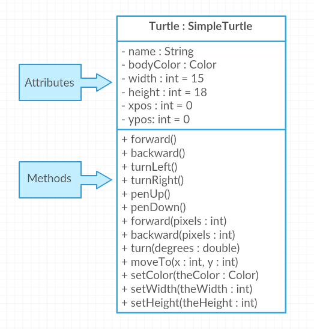

Part 1: Object-Oriented Design and Abstraction
In Unit 1, we learned to use classes and objects that are built-in to Java or written by other programmers, for example the Turtle class.
In this unit, you will learn to write your own classes and make your own objects.
Prior to implementing a class, it is helpful to take time to design each class including its attributes and behaviors.
This design can be represented using natural language or diagrams.
In this lesson, you will learn about abstraction and how it can be used to design a program.
In object-oriented design (面向对象设计), programmers often start by deciding which classes are needed to solve a problem and then figure out the data and methods in each class.
When you are given a problem specification, you can identify classes you’ll need by looking for the nouns in the specification.
The specification for the Turtle class probably contained a sentence that said something like:
make turtles that can exist on a 2-dimensional world and can draw lines by moving around the world
The main nouns in that description are “turtle” and “world”.
Indeed, the classes in the system are Turtle and World.
shortanswer:: OOD1You’ve been hired by your school to create a program that keeps track of “students at your school and the courses they are taking”.
Name 2 classes that you would create in your program.
Name 2 attributes, data kept in instance variables, for each class.
OOD1The two nouns in the problem description, Student and Course, would make good class names.
Then, you can think about what data you need to keep track of for students and courses and what methods you need.
For the Student class, you might need to keep track of the student’s name and grade level.
For the Course class, you might need to keep track of the course name and the teacher’s name.
Sometimes it’s useful, when designing a complex system with lots of classes, to make diagrams of the classes that show you at a glance what instance variables and methods they have.
Often these can just be sketches in your notebook or on a whiteboard.
There are also more formal systems such as the Unified Modeling Language (UML) for drawing these diagrams.
Here is a UML class diagram for the Turtle class which includes a list of its attributes and behaviors.

Turtle class diagram
Class Diagrams are a way to represent the classes in a program and the data and procedural abstractions found in each class.
The attributes are the instance variables.
The methods are the behaviors of the class.
The - in front of the attributes indicate that they are private, and the + in front of the methods indicate that they are public.
Class diagrams are not on the AP CSA exam.
Abstraction is the process of reducing complexity by focusing on the main idea.
By hiding details irrelevant to the question at hand and bringing together related and useful details, abstraction reduces complexity and allows one to focus on the idea.
The class diagram above is an example of abstraction.
It shows the main idea of the Turtle class without showing all the details of the class.
The diagram shows the attributes and methods of the class, but it does not show the details of how the methods are implemented.
Data abstraction provides a separation between the abstract properties of a data type and the concrete details of its representation.
For example, we can use the Turtle class and type without needing to know how it is implemented.
Data abstraction manages complexity by giving data a name without referencing the specific details of the representation.
Data can take the form of a single variable or a collection of data, such as in a class like Turtle.
An attribute is a type of data abstraction that is defined in a class, for example the width or height of a Turtle object.
An instance variable is an attribute whose value is unique to each instance of the class.
For example, each turtle object could have different width or height values.
A class variable is an attribute shared by all instances of the class.
For example, we could keep a count of how many turtles have been created in a class variable.
Procedural abstraction provides a name for a process and allows a method to be used only knowing what it does, not how it does it.
Through method decomposition, a programmer breaks down larger behaviors of the class into smaller behaviors by creating methods to represent each individual smaller behavior.
For example, in the Turtle class, the forward() method is a procedural abstraction that allows the turtle to move forward without needing to know exactly how the turtle is animated to move forward.
Using procedural abstraction in a program allows programmers to change the internals of a method, to make it faster, more efficient, use less storage, etc.
Method users do not need to be notified of the change as long as the method signature and what the method does is preserved.
For example, we could change the way the Turtle class is implemented to make it faster without needing to change the way the forward() method is called.
Another reason to use procedural abstraction is to avoid repetition of code.
When we were deconstructing songs into methods in Unit 1, we found that we could reuse the chorus() or verse() method for each verse of the song.
A procedural abstraction may extract shared features to generalize functionality instead of duplicating code.
This allows for code reuse, which helps manage complexity.
Adding parameters to methods allows for even more abstraction and flexibility in code.
Parameters allow procedures to be generalized, enabling the procedures to be reused with a range of input values or arguments.
Part 2 continues with Old MacDonald procedural abstraction and the Game Design group challenge.